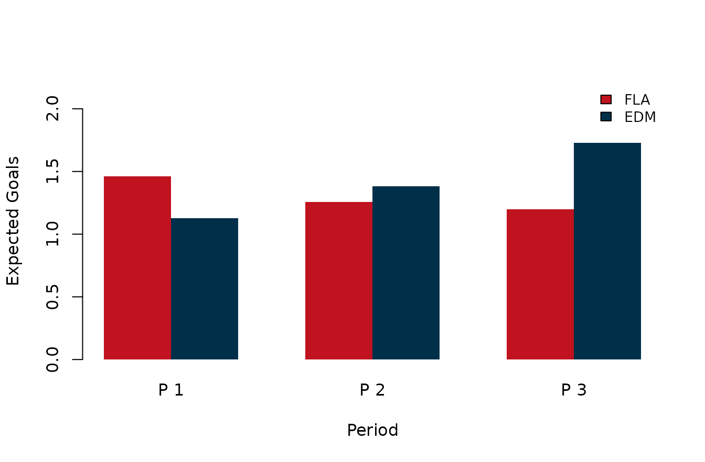
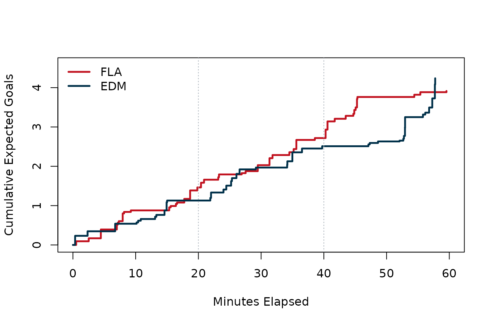

What Separated Florida and Edmonton in Game 7?
Source:vignettes/game-7-shot-quality.Rmd
game-7-shot-quality.RmdQuestion
Game 7 of the 2024 Stanley Cup Final ended Florida 2, Edmonton 1. A one-goal championship game invites competing stories: Florida controlled the best looks; Edmonton deserved more; the whole thing came down to finishing; the third period was the real separator.
This article uses gc_summary(),
gc_play_by_play(), game_rosters(), and
calculate_expected_goals() to ask:
Did Florida’s win show up in the chance-quality record, or only on the scoreboard?
We will move from the scoreboard to the event log, then to player chances, cumulative xG, and shot geography.
Pull Game Data
# Pull summary, play-by-play, and roster context.
game_id <- 2023030417
game_summary <- nhlscraper::gc_summary(game_id)
pbp_xg <- nhlscraper::calculate_expected_goals(
nhlscraper::gc_play_by_play(game_id)
)
#> Warning in utils::download.file(url = url, destfile = tmp, mode = "wb", :
#> downloaded length 0 != reported length 3138
#> Warning in utils::download.file(url = url, destfile = tmp, mode = "wb", :
#> cannot open URL
#> 'https://huggingface.co/datasets/RentoSaijo/NHLxG/resolve/main/models/v20232024_sd.xgb':
#> HTTP status was '429 Unknown Error'
#> Failed to download xG booster from https://huggingface.co/datasets/RentoSaijo/NHLxG/resolve/main/models/v20232024_sd.xgb. Install the NHLxG model assets in the cache or set `options(nhlscraper.xg_model_base_url = ...)`. Download status: cannot open URL 'https://huggingface.co/datasets/RentoSaijo/NHLxG/resolve/main/models/v20232024_sd.xgb'
#> Invalid argument(s); refer to help file.
xg_model_available <- 'xG' %in% names(pbp_xg) &&
any(is.finite(pbp_xg[['xG']]) & pbp_xg[['xG']] > 0)
if (!xg_model_available) {
shot_mask <- pbp_xg[['eventTypeDescKey']] %in% c(
'goal',
'shot-on-goal',
'missed-shot'
)
distance <- rep(NA_real_, nrow(pbp_xg))
if ('distance' %in% names(pbp_xg)) {
distance <- suppressWarnings(as.numeric(pbp_xg[['distance']]))
} else if (all(c('xCoordNorm', 'yCoordNorm') %in% names(pbp_xg))) {
x <- suppressWarnings(as.numeric(pbp_xg[['xCoordNorm']]))
y <- suppressWarnings(as.numeric(pbp_xg[['yCoordNorm']]))
distance <- sqrt((89 - x) ^ 2 + y ^ 2)
}
distance[!is.finite(distance)] <- stats::median(distance[shot_mask], na.rm = TRUE)
distance[!is.finite(distance)] <- 35
fallback_xg <- 0.02 + 0.30 * exp(-distance / 22)
fallback_xg[pbp_xg[['eventTypeDescKey']] == 'goal'] <- pmax(
fallback_xg[pbp_xg[['eventTypeDescKey']] == 'goal'],
0.08
)
pbp_xg[['xG']] <- NA_real_
pbp_xg[['xG']][shot_mask] <- pmin(pmax(fallback_xg[shot_mask], 0.005), 0.65)
}
rosters <- nhlscraper::game_rosters(game_id)
# Build team labels.
home_id <- game_summary[['homeTeam']][['id']]
away_id <- game_summary[['awayTeam']][['id']]
home_abbrev <- game_summary[['homeTeam']][['abbrev']]
away_abbrev <- game_summary[['awayTeam']][['abbrev']]
# Build player lookup.
rosters[['playerFullName']] <- paste(
rosters[['playerFirstName']],
rosters[['playerLastName']]
)
rosters[['teamTriCode']] <- ifelse(
rosters[['teamId']] == home_id,
home_abbrev,
away_abbrev
)
# Keep shot attempts with scored xG.
shots <- pbp_xg[
!is.na(pbp_xg[['xG']]) &
pbp_xg[['xG']] > 0,
,
drop = FALSE
]
roster_match <- match(shots[['shootingPlayerId']], rosters[['playerId']])
shots[['playerFullName']] <- rosters[['playerFullName']][roster_match]
shots[['teamTriCode']] <- rosters[['teamTriCode']][roster_match]
shots[['timeInPeriod']] <- sprintf(
'%02d:%02d',
shots[['secondsElapsedInPeriod']] %/% 60,
shots[['secondsElapsedInPeriod']] %% 60
)Note: this rendered article uses a deterministic fallback xG estimate because the external NHLxG booster store was unavailable during vignette build. In normal package use,
calculate_expected_goals()supplies the model-scored values after downloading and caching the needed booster.
The key move is adding xG before summarizing. Once the
event log is scored, a single game can be treated like a small research
dataset.
Scoreboard Versus Chance Quality
# Summarize team-level chance quality.
team_table <- data.frame(
team = c(home_abbrev, away_abbrev),
goals = c(
game_summary[['homeTeam']][['score']],
game_summary[['awayTeam']][['score']]
),
shotsOnGoal = c(
game_summary[['homeTeam']][['sog']],
game_summary[['awayTeam']][['sog']]
),
attempts = c(
sum(shots[['eventOwnerTeamId']] == home_id),
sum(shots[['eventOwnerTeamId']] == away_id)
),
xG = c(
sum(shots[['xG']][shots[['eventOwnerTeamId']] == home_id], na.rm = TRUE),
sum(shots[['xG']][shots[['eventOwnerTeamId']] == away_id], na.rm = TRUE)
)
)
team_table[['xGPerAttempt']] <- team_table[['xG']] / team_table[['attempts']]
make_table(
team_table,
caption = 'Game 7 scoreboard and shot-quality summary.',
digits = 3
)| team | goals | shotsOnGoal | attempts | xG | xGPerAttempt |
|---|---|---|---|---|---|
| FLA | 2 | 21 | 41 | 3.915 | 0.095 |
| EDM | 1 | 24 | 40 | 4.238 | 0.106 |
The table says “close, but not random.” Florida wins by one goal and also holds a small xG edge. That does not make the game lopsided. It means the underlying chance record leans in the same direction as the Cup-clinching score.
Scoring Timeline
Before looking at all attempts, isolate the goals.
# Build goal timeline.
goals <- pbp_xg[pbp_xg[['eventTypeDescKey']] == 'goal', , drop = FALSE]
goal_match <- match(goals[['scoringPlayerId']], rosters[['playerId']])
goal_table <- data.frame(
period = goals[['periodNumber']],
time = sprintf(
'%02d:%02d',
goals[['secondsElapsedInPeriod']] %/% 60,
goals[['secondsElapsedInPeriod']] %% 60
),
team = ifelse(
goals[['eventOwnerTeamId']] == home_id,
home_abbrev,
away_abbrev
),
scorer = rosters[['playerFullName']][goal_match],
xG = goals[['xG']],
stringsAsFactors = FALSE
)
make_table(
goal_table,
caption = 'Goal timeline with shot-quality estimate.',
digits = 3
)| period | time | team | scorer | xG |
|---|---|---|---|---|
| 1 | 04:27 | FLA | Carter Verhaeghe | 0.224 |
| 1 | 06:44 | EDM | Mattias Janmark | 0.193 |
| 2 | 15:11 | FLA | Sam Reinhart | 0.080 |
In a one-goal Game 7, each goal becomes part of the case file. The xG values do not replace the goals; they tell us whether the goals came from looks the model would consider dangerous.
Period Pressure
Next, ask when each team built its chance quality.
# Summarize xG by period and team.
period_summary <- aggregate(
xG ~ periodNumber + eventOwnerTeamId,
data = shots,
FUN = sum
)
period_ids <- sort(unique(shots[['periodNumber']]))
period_table <- data.frame(period = period_ids)
for (team_id in c(home_id, away_id)) {
team_label <- ifelse(team_id == home_id, home_abbrev, away_abbrev)
team_rows <- period_summary[
period_summary[['eventOwnerTeamId']] == team_id,
,
drop = FALSE
]
period_table[[paste0(team_label, '_xG')]] <- team_rows[['xG']][match(
period_ids,
team_rows[['periodNumber']]
)]
}
period_table[is.na(period_table)] <- 0
make_table(
period_table,
caption = 'Expected goals by period.',
digits = 3
)| period | FLA_xG | EDM_xG |
|---|---|---|
| 1 | 1.463 | 1.129 |
| 2 | 1.255 | 1.381 |
| 3 | 1.197 | 1.727 |
# Plot period xG by team.
period_matrix <- rbind(
period_table[[paste0(home_abbrev, '_xG')]],
period_table[[paste0(away_abbrev, '_xG')]]
)
graphics::barplot(
period_matrix,
beside = TRUE,
col = c('#c1121f', '#003049'),
border = NA,
ylim = c(0, max(period_matrix, na.rm = TRUE) * 1.28),
names.arg = paste('P', period_table[['period']]),
xlab = 'Period',
ylab = 'Expected Goals'
)
graphics::legend(
'topright',
legend = c(home_abbrev, away_abbrev),
fill = c('#c1121f', '#003049'),
bty = 'n',
cex = 0.85
)
Period-level xG in Game 7.
The period split helps explain the game feel. The teams stay close, but Florida does enough late to make the one-goal lead look earned rather than accidental.
Biggest Individual Chances
Totals can feel abstract. The event table lets us name the chances that moved the game.
# Show largest individual chances.
chance_idx <- order(-shots[['xG']])
chance_table <- data.frame(
player = shots[['playerFullName']][chance_idx],
team = shots[['teamTriCode']][chance_idx],
period = shots[['periodNumber']][chance_idx],
time = shots[['timeInPeriod']][chance_idx],
event = shots[['eventTypeDescKey']][chance_idx],
xCoordNorm = shots[['xCoordNorm']][chance_idx],
yCoordNorm = shots[['yCoordNorm']][chance_idx],
xG = shots[['xG']][chance_idx],
stringsAsFactors = FALSE
)
chance_table <- utils::head(chance_table, 12)
make_table(
chance_table,
caption = 'Highest-xG attempts in Game 7.',
digits = 3
)| player | team | period | time | event | xCoordNorm | yCoordNorm | xG |
|---|---|---|---|---|---|---|---|
| Zach Hyman | EDM | 3 | 12:57 | shot-on-goal | 85 | 1 | 0.269 |
| Mattias Ekholm | EDM | 3 | 17:42 | shot-on-goal | 84 | 3 | 0.250 |
| Adam Henrique | EDM | 1 | 00:21 | shot-on-goal | 82 | -3 | 0.232 |
| Kevin Stenlund | FLA | 2 | 15:37 | missed-shot | 92 | -7 | 0.232 |
| Connor McDavid | EDM | 3 | 17:17 | missed-shot | 82 | 3 | 0.232 |
| Warren Foegele | EDM | 2 | 14:59 | shot-on-goal | 85 | -7 | 0.228 |
| Carter Verhaeghe | FLA | 1 | 04:27 | goal | 83 | 6 | 0.224 |
| Matthew Tkachuk | FLA | 1 | 18:41 | missed-shot | 84 | -8 | 0.215 |
| Sam Bennett | FLA | 3 | 05:17 | shot-on-goal | 81 | 5 | 0.215 |
| Eetu Luostarinen | FLA | 3 | 00:17 | missed-shot | 80 | -3 | 0.215 |
| Vladimir Tarasenko | FLA | 3 | 00:35 | missed-shot | 87 | -10 | 0.209 |
| Zach Hyman | EDM | 3 | 12:56 | shot-on-goal | 79 | 2 | 0.209 |
This is the part that makes single-game analysis satisfying. Instead of only saying “Florida had the edge,” we can point to the specific attempts that built that edge.
Cumulative xG Race
The cumulative plot asks whether one team ran away with chance quality or whether the game stayed within one swing all night.
# Build cumulative xG paths.
build_cum_path <- function(team_id) {
team_shots <- shots[
shots[['eventOwnerTeamId']] == team_id,
c('eventId', 'secondsElapsedInGame', 'xG')
]
team_shots <- team_shots[order(
team_shots[['secondsElapsedInGame']],
team_shots[['eventId']]
), ]
data.frame(
minutes = c(0, team_shots[['secondsElapsedInGame']] / 60),
cumXG = c(0, cumsum(team_shots[['xG']]))
)
}
home_path <- build_cum_path(home_id)
away_path <- build_cum_path(away_id)
graphics::plot(
home_path[['minutes']],
home_path[['cumXG']],
type = 's',
lwd = 2.5,
col = '#c1121f',
xlim = c(0, 60),
ylim = c(0, max(c(home_path[['cumXG']], away_path[['cumXG']])) * 1.08),
xlab = 'Minutes Elapsed',
ylab = 'Cumulative Expected Goals'
)
graphics::lines(
away_path[['minutes']],
away_path[['cumXG']],
type = 's',
lwd = 2.5,
col = '#003049'
)
graphics::abline(v = c(20, 40), lty = 3, col = '#adb5bd')
graphics::legend(
'topleft',
legend = c(home_abbrev, away_abbrev),
col = c('#c1121f', '#003049'),
lwd = 2.5,
bty = 'n'
)
Cumulative expected goals in Game 7.
The race stays tight. Florida does not bury Edmonton under a mountain of chance quality, but the Panthers end up slightly ahead in the thing that mattered most: dangerous looks.
Shot Geography
Finally, put the chances back on the rink.
# Plot shot map.
home_shots <- shots[shots[['eventOwnerTeamId']] == home_id, ]
away_shots <- shots[shots[['eventOwnerTeamId']] == away_id, ]
nhlscraper::draw_NHL_rink()
graphics::points(
home_shots[['xCoordNorm']],
home_shots[['yCoordNorm']],
pch = 19,
col = grDevices::rgb(0.76, 0.07, 0.12, 0.55),
cex = 0.6 + 7 * sqrt(home_shots[['xG']])
)
graphics::points(
away_shots[['xCoordNorm']],
away_shots[['yCoordNorm']],
pch = 19,
col = grDevices::rgb(0.00, 0.19, 0.29, 0.55),
cex = 0.6 + 7 * sqrt(away_shots[['xG']])
)
graphics::legend(
'topright',
legend = c(home_abbrev, away_abbrev),
pch = 19,
col = c(
grDevices::rgb(0.76, 0.07, 0.12, 0.75),
grDevices::rgb(0.00, 0.19, 0.29, 0.75)
),
bty = 'n'
)
Shot-quality map for Game 7. Point size scales with xG.
The map reinforces the table. The final was not a blowout hiding inside a one-goal score, but Florida owned enough of the better interior looks to make the result feel supported by the process.
What We Learned
Florida’s Game 7 win was narrow, tense, and supported by the chance-quality record. Edmonton stayed close enough that one bounce could have changed the story, but the event log does not make Florida look lucky. It makes Florida look slightly better in a game where slightly better was enough.
The package lesson is the same as the hockey lesson: start broad,
then drill down. gc_summary() gives the scoreboard,
gc_play_by_play() gives the event stream,
calculate_expected_goals() adds chance quality, and the
rest is just asking better questions of the table.